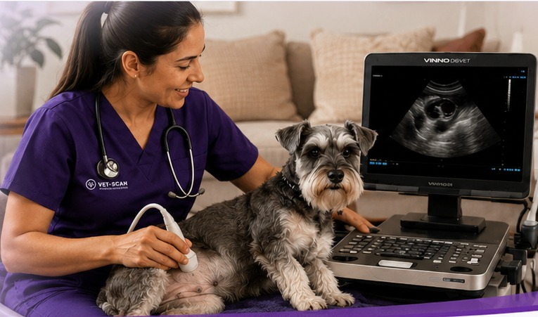

Ecografía
Ecografía abdominal básica
Apoyo diagnóstico ecográfico a domicilio.
- Servicio a domicilio
- Estudio abdominal
- Agenda previa
Nuestros servicios
Consulta nuestras opciones de ecografía y apoyo diagnóstico, revisa el precio de cada servicio y agenda directamente con VET-SCAN.

Catálogo
Explora nuestra galería de servicios, consulta el valor de cada atención y agenda directamente por WhatsApp con VET-SCAN.
Apoyo diagnóstico ecográfico a domicilio.
Estudio ecográfico especializado para apoyo diagnóstico.
Control ecográfico para seguimiento del paciente.
Estudio ecográfico para seguimiento de gestación.
Control ecográfico gestacional a domicilio.
Procedimientos simples guiados por ecografía.
Medición y seguimiento de presión arterial.
Productos
La información suministrada hasta ahora define los servicios, pero no incluye un inventario, nombres, precios o referencias de productos. Dejamos esta vista lista para incorporarlos sin cambiar el diseño.
Consultar productos¿No sabes cuál elegir?
Te orientamos por WhatsApp y coordinamos la atención más adecuada según el caso.